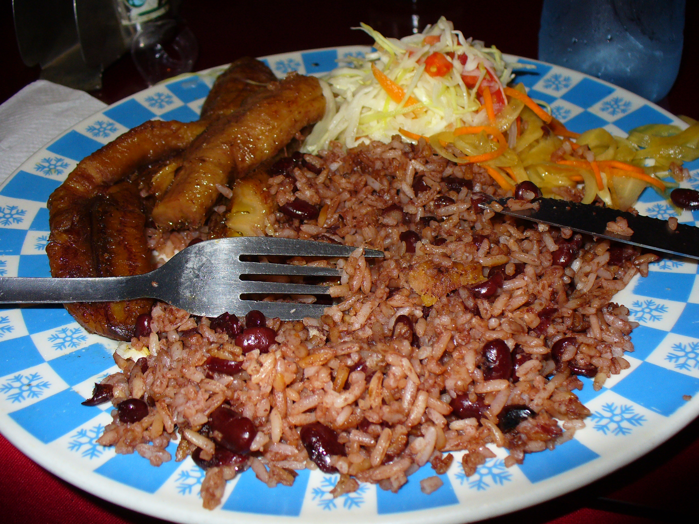
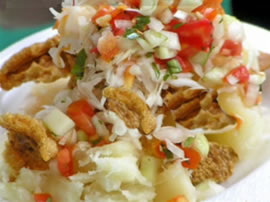
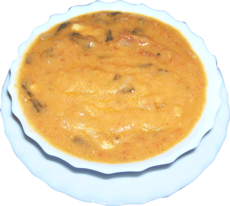

Gallo pinto
Esta elaborado a base de arroz y frijoles rojos, las cuales son mesclados; se comen casi a diario en todos los hogares nicaragüenses..
Se cocina el arroz blanco y se frien también los frijoles rojos una vez salcochados. Al servirlo se acompaña con platanos maduros fritos, ensalada y queso.

El vigorón
Elaborado con yuca salcochada con sal, chicharrones(Piel de cerdo), ensalada y acompañado con un refresco típico llamado "tiste".
La yuca es salcochada, el chicharron es extraida de la piel de cerdo y carne de cerdo, la ensalada es elaborada con ingredientes de: Repollo cortado en fajitas finas, tomate, cebolla, chiltoma verde cortadas en trocitos pequeños, se le agrega vinagre de fruta y se le agrega un poco de picante según el gusto.

Indio viejo
Elaborado con masa de maíz con carne desilada y trozos pequeños de chilote tierno(Baby corn).
Se elabora la masa con achiote rojo, se mescla la masa con la misma y se pone en una "casuela" para freirlo, mesclandole agua para hacer una masa homogénea(No aguada, no dura), luego se salcocha la carne y se desila cortandola en pedazos en trozitos pequeños y se mescla con la masa antes preparada, luego se le hecha un poco de aceite y se le agregar elotitos tiernos en trocitoz pequeños(Chilotes), luego se cocina a fuego lento removiendose constantemente para evitar que se pegue en la "casuela" y se queme. Llega a un punto de ebillucion y el aceite tiene a subir indicando que ya esta lista.